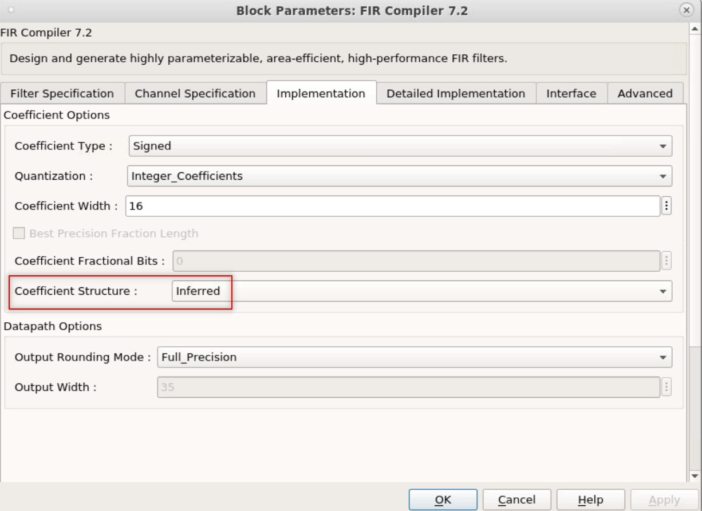
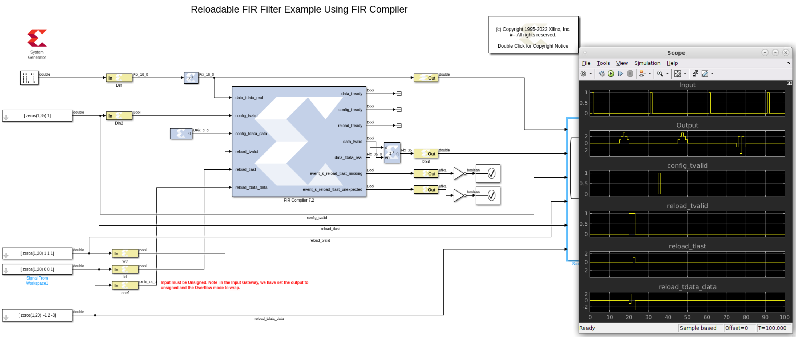

This design example shows how the FIR Compiler block can be configured as a reloadable coefficient FIR filter.
In this example, the first set of coefficients is specified and loaded by the core, and the second set is loaded from an external
source. The first set of coefficients specifies a symmetric filter, [1 2 3 2 1]. Note the filter structure is inferred from the coefficients provided to the block per the setting depicted in the image below.

The reloadable filter must be of the same specification and size of the initial filter loaded by the core. In this example, the reloadable filter should also be symetric. Here we have chosen [-1 2 -3 2 -1] as the relodable filter. However, we need to process this filter by the xlGetReOrderedCoeff function and provide the output of this function to the reloadtdatadata input signal of the core.
outCoeff = xlGetReOrderedCoeff(newcoeffset, returnType, block_handle)
to get the reordered coefficients based on the settings and coefficients specified in the core.
Example :
In the Simulink model, select the FIR Compiler 7.2 block.
In the MATLAB Command Window, enter the following commands:
>new_coeff = [-1 2 -3 2 -1]
new_coeff = -1 2 -3 2 -1
>xlGetReOrderedCoeff(new_coeff,'coeff',gcbh)
ans = -1
2
-3
To understand the use the FIR Compiler 7.2 design for a reloadable filter,
observe the following:
Double-click the FIR Compiler block and you can see the set of coefficients [1 2 3 2 1] was specified.
This set of coefficients is pre-loaded in the core.
The set of inputs connected to the FIR Compiler block (reloadtvalid, reloadtlast, and
reloadtdatadata) perform the following on the FIR Compiler 7.2 block:
The inputs that are connected to the three reload_* signals are vectors in this format:
Once the coefficients are lodaed, to use the new coefficinets, the config_tvalid input should be set to one for one cycle.
Now, Double-click the Scope block and observe the following:
The reload tvalid control signal goes high during the reload period,
when the new set of coefficients is loaded via the reloadtdata_data input port.
reload_tlast goes high at the 20th simulation time for 1 sample period,
to indicate the last coefficient data.
New filter will take effect after the config_tvalid signal is set for a clock cycle.
Coefficients can be symmetric or asymmetric.
 Note that the reloadable input to the filter must be unsigned. In this example, the gateway block is set to produce unsigned output and the Overflow mode is set to wrap.
Note that the reloadable input to the filter must be unsigned. In this example, the gateway block is set to produce unsigned output and the Overflow mode is set to wrap.

Copyright 2020 Xilinx
Licensed under the Apache License, Version 2.0 (the "License");
you may not use this file except in compliance with the License.
You may obtain a copy of the License at
http://www.apache.org/licenses/LICENSE-2.0
Unless required by applicable law or agreed to in writing, software
distributed under the License is distributed on an "AS IS" BASIS,
WITHOUT WARRANTIES OR CONDITIONS OF ANY KIND, either express or implied.
See the License for the specific language governing permissions and
limitations under the License.